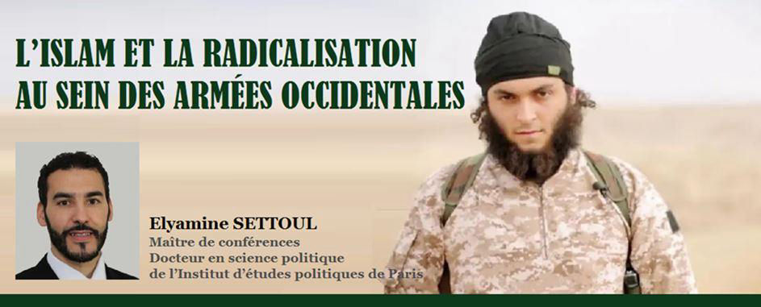
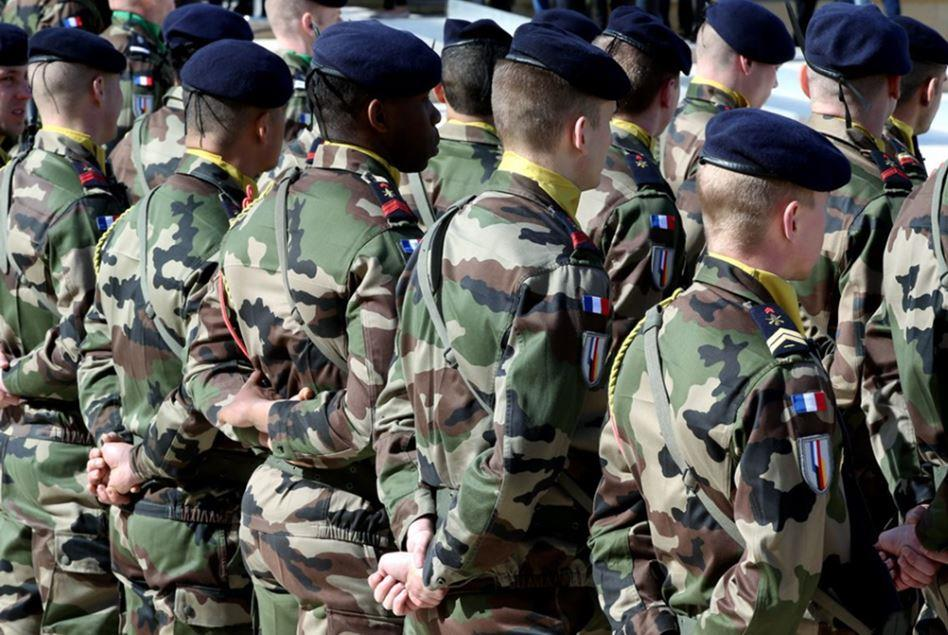
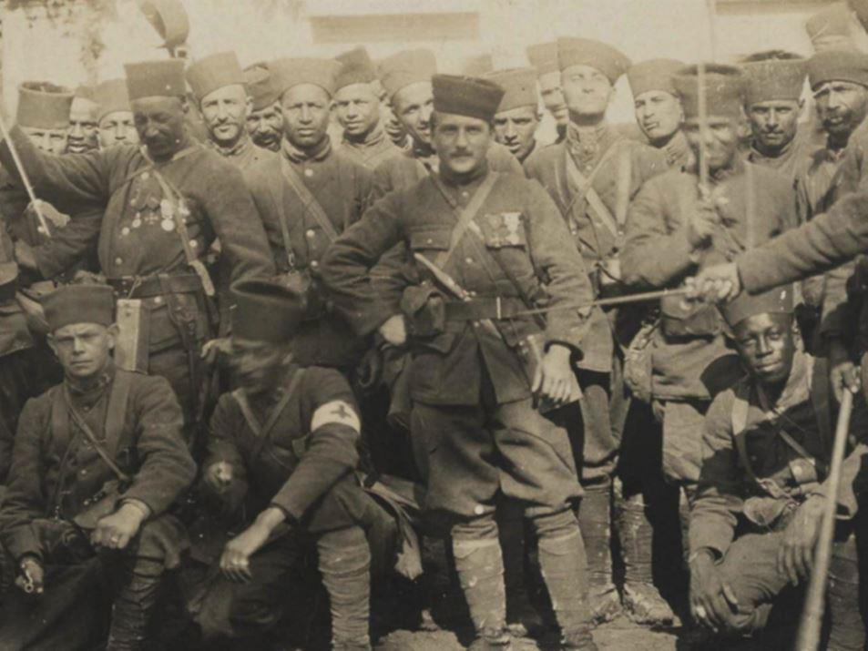
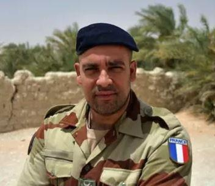
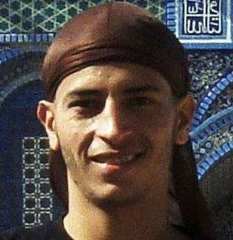
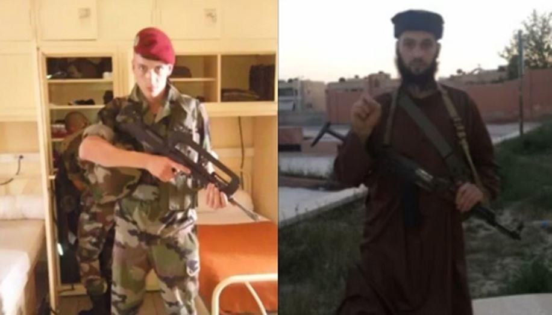
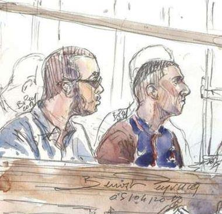
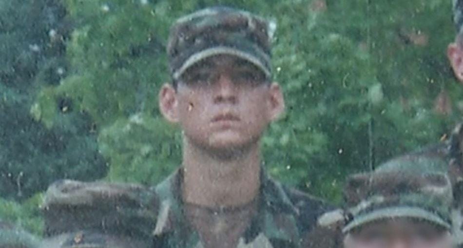
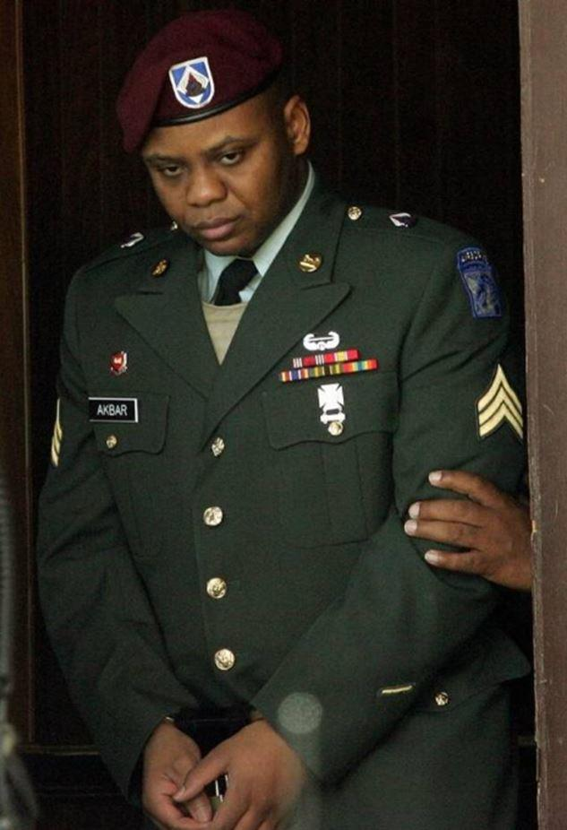
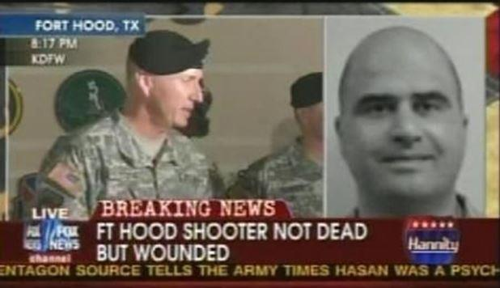

L’islam et la radicalisation au sein des armées occidentales
par Elyamine SETTOUL

À l’instar de nombreux pays, la société française est confrontée à l’émergence de menaces liées au basculement de milliers de personnes dans un engagement radical plus ou moins violent motivé par l’identification à certaines conceptions de la religion musulmane. Ce phénomène n’épargne pas les institutions militaires occidentales.
Articulée autour de deux thématiques, cette note dresse dans un premier temps une brève synthèse de la question de l’islam au sein des armées françaises et brosse un portrait de l’islam militaire français une décennie après la création de son aumônerie militaire en 2006, à partir d’une perspective comparative internationale. Dans un second temps, elle décrypte les interactions entre les logiques de radicalisation et la sphère militaire. Si les armées françaises ont été jusqu’à présent épargnées par ces phénomènes (dans ses formes d’expression les plus violentes), les expériences étrangères sont riches d’enseignements pour l’identification et la mise en œuvre de bonnes pratiques notamment dans le cadre d’actions préventives.
L’institutionnalisation de l’islam au sein des armées : bilan et perspectives
Dans un contexte de multiplication des actes terroristes commis par des personnes nées et socialisées sur le territoire national (homegrown terrorists), la question de la gestion de l’islam au sein des armées occidentales revêt désormais une dimension quasi stratégique.
Fondée sur une approche comparative internationale, cette note dresse un panorama de la gestion du fait musulman à l’intérieur des institutions militaires occidentales. Soucieuses de répondre au principe d’égalité et de respect du pluralisme religieux, de plus en plus d’armées s’attachent à organiser le fait musulman dans leurs rangs. Outre le souci d’égalité, cette volonté s’appuie également sur des impératifs fonctionnels tels que le renforcement de la cohésion interne ou les enjeux de recrutement inhérents aux armées professionnalisées.
LES ARMÉES FRANÇAISES : UNE INSTITUTION ATTRACTIVE AUPRÈS DES JEUNES ISSUS DE MINORITÉS
Phénomène relativement méconnu, les armées françaises exercent une réelle attraction sur des jeunes issus des quartiers populaires et notamment ceux de culture musulmane. Contrairement à l’uniforme policier qui semble cristalliser une certaine méfiance, voire une forme d’hostilité, l’institution militaire jouit d’un capital symbolique plutôt positif dans les zones urbaines défavorisées. Les sociologues américains du milieu militaire ont très tôt décrypté ce phénomène en soulignant que les armées étaient, comparativement au secteur civil, en avance en termes d’intégration des minorités ethniques.
Celles-ci ont même été souvent définies comme la première institution au sein de laquelle des Afro-Américains pouvaient diriger des Américains blancs1. Depuis la mise en place de l’All Volunteer Force au début des années 1970, de nombreux rapports mentionnent la surreprésentation des minorités ethniques au sein des armées américaines2. Toute proportion gardée, il est possible d’établir un parallèle avec le contexte français post-professionnalisation. Avec plusieurs milliers de postes proposés chaque année, les armées attirent mécaniquement toutes les composantes de la société française. De facto, les militaires du rang et les sous-officiers incarnent du point de vue sociologique l’ensemble de la nation. En revanche, et malgré la mise en place en 2008 d’un plan Égalité des chances destiné à élargir la provenance sociale du corps des officiers, ce dernier demeure encore faiblement diversifié tant du point de vue social qu’au niveau ethnique3.
Si l’institution militaire jouit aussi d’une image très positive, c’est également en raison de ses méthodes de recrutement. Fondés sur des tests physiques et psychotechniques, les processus de sélection sont jugés plus objectifs et méritocratiques que ceux en vigueur dans le secteur civil où d’autres paramètres tels que les réseaux de connaissances ou les discriminations (ethniques, sexuelles, territoriales) peuvent entrer en ligne de compte4.
À l’échelle européenne, la France se caractérise par une forte diversité interne de ses effectifs. Ce phénomène s’explique par une conjonction de facteurs – historiques, institutionnels, sociologiques – favorables :
– Historiquement, la France se distingue des autres nations par un héritage colonial marqué par une mobilisation massive de soldats de confession musulmane (tirailleurs, harkis, etc.). Nombre de jeunes soldats français issus de l’immigration définissent leur engagement militaire comme la perpétuation de pratiques familiales. Ce legs historique se matérialise également dans des cultures régimentaires qui continuent d’entretenir des traditions sédimentées durant l’époque coloniale (devises, chants, insignes, tenues)5.
– Institutionnellement, la conscription a largement irrigué la relation armées-société. Bien que ce lien se soit considérablement érodé depuis la suspension du service national en 1996, l’expérience militaire acquise par les aînés au cours de leur conscription continue de se transmettre. Elle permet de familiariser les jeunes générations avec cette voie professionnelle et de l’inscrire dans le champ des possibles.
– Sociologiquement, la spécificité française tient aussi aux particularités de ses populations musulmanes. Majoritairement issus de l’immigration maghrébine et africaine, les Français de confession musulmane ont, à rebours des représentations, largement intériorisé la conception nationale de l’intégration axée sur l’individu citoyen et la réticence aux pratiques communautaires.
LES ARMÉES ALLEMANDES ET BRITANNIQUES : UNE ATTRACTIVITÉ MOINDRE PARMI CES SEGMENTS DE POPULATION
Un regard comparatif avec les armées britanniques et allemandes permet de mieux saisir les incidences des singularités nationales. Les grands pays d’immigration en Europe comptent en effet des minorités musulmanes aux provenances et aux caractéristiques sociologiques très disparates.
Au Royaume-Uni, ces groupes religieux sont majoritairement issus de l’ex-empire colonial (Inde et Pakistan), tandis qu’en Allemagne, ils proviennent essentiellement de Turquie.
Ces différents groupes ethno-religieux ont comme caractéristique commune de former des communautés très dynamiques au niveau entrepreneurial (restauration, bâtiment, etc.).
Ces solidarités professionnelles intracommunautaires peuvent constituer un frein à l’engagement dans les armées. Mais d’autres facteurs endogènes entrent en ligne de compte.
En Grande-Bretagne, la faible culture de conscription et la précocité de la professionnalisation (mai 1963) a engendré une déconnexion structurelle entre les citoyens et leurs armées. Ce constat est encore plus flagrant pour les vagues d’immigration de culture musulmane arrivées pour l’essentiel à partir des années 1960. La conjonction de ces facteurs a conforté la perception dominante des armées britanniques vues comme une institution faiblement représentative de la société (white institution). Malgré des campagnes de diversification très offensives, les minorités ethniques demeurent sous-représentées au sein des armées britanniques.
En Allemagne, bien que les armées rencontrent des défis similaires en termes d’attraction des minorités, les facteurs qui en sont à l’origine diffèrent quelque peu. Le droit de la nationalité en vigueur dans ce pays s’est longtemps appuyé sur le droit du sang (jus sanguinis) ce qui a eu pour conséquence de limiter l’engagement des minorités au sein des métiers de la fonction publique. À ce facteur juridique, s’ajoute la vitalité du lien qu’entretient l’État turc avec ses communautés implantées à l’étranger. Ce dernier n’hésite pas à tisser des réseaux transnationaux très dynamiques destinés à préserver le sentiment d’appartenance nationale parmi les membres de sa diaspora pour lesquels cette particularité peut constituer un frein supplémentaire aux velléités d’engagement militaire. Ces réseaux tendent à maintenir un sentiment patriotique très fort par-delà les frontières.
L’AUMÔNERIE MUSULMANE DES ARMÉES FRANÇAISES : UNE RÉFÉRENCE INTERNATIONALE
La création en 2006 de l’aumônerie du culte musulman constitue un facteur de normalisation de la gestion de la deuxième religion de France à l’intérieur des armées. Massivement enrôlés depuis la période coloniale, le soutien cultuel apporté aux soldats musulmans s’était jusque-là principalement cantonné à la gestion des rites alimentaires et funéraires.
Calquée sur le modèle des trois autres aumôneries existantes (catholique, protestante, israélite), l’aumônerie militaire du culte musulman apparaît aujourd’hui comme la structure la plus élaborée du monde occidental en termes d’organisation. Avec 45 aumôniers7, elle se place d’un point de vue quantitatif loin devant toutes les autres aumôneries du culte musulman des armées occidentales. Par comparaison, les armées américaines au format beaucoup plus conséquent comptent actuellement une dizaine d’aumôniers musulmans dont 5 d’active8. Aux Pays-Bas, deux aumôniers gèrent les besoins et prescriptions des soldats musulmans. Les armées britanniques et allemandes demeurent dans des formes d’organisation encore embryonnaires. Les premières emploient à ce jour un unique aumônier tandis que les armées allemandes entament actuellement des réflexions pour la mise en place d’une structure.
 Mohamed-Ali, aumônier musulman, engagé dans l’opération française de lutte contre le terrorisme (opération Barkhane) au Sahel, en avril 2015. (DR.)Outre son importance numérique, l’aumônerie française du culte musulman se démarque par son degré d’organisation. Son dynamisme se traduit notamment par la mise en place d’activités et de réflexions qui s’inspirent fortement du mode de fonctionnement des autres aumôneries (pèlerinage religieux à La Mecque, publication d’une revue interne).
Outre le soutien moral apporté aux soldats, ils contribuent à faire remonter les problématiques relatives à la vie des troupes auprès du commandement.
Les armées face aux phénomènes djihadistes : menaces externes et risques internes
LA MASSIFICATION DES PHÉNOMÈNES DJIHADISTES
À l’instar de nombreux pays européens, la société française est confrontée à l’émergence de menaces liées au basculement de centaines de personnes dans un engagement radical parfois violent. Ce phénomène est clairement perceptible d’un point de vue statistique.
Daech a réussi à mobiliser entre 25 et 30 000 combattants étrangers issus de 90 nations en l’espace de 4 à 5 années. Avec près de 1 700 citoyens français, la France représenterait le premier fournisseur occidental de combattants étrangers et le cinquième à l’échelle mondiale9.
Par comparaison, la première génération de djihadistes partis en Afghanistan regroupait environ 20 000 combattants étrangers (principalement issus de pays arabes) engagés sur une période de plus d’une décennie (1980-1992).
Cette importance numérique s’explique par deux facteurs principaux. D’une part, la proximité géographique du théâtre de guerre syrien, limitrophe de la Turquie. D’autre part, l’influence des réseaux sociaux qui décuplent les capacités de communication des djihadistes à destination des potentiels candidats occidentaux. On observe, parallèlement à ces départs, une multiplication des homegrown terrorists, c’est-à-dire d’individus nés et socialisés en Occident qui commettent des actes terroristes contre leur propre société.
Si la diversité des profils et des trajectoires sociales de djihadistes interroge l’ensemble des sociétés européennes, la question se pose avec encore plus d’acuité pour des institutions aussi symboliques et sensibles que les armées. La France n’est pas épargnée par ces dynamiques.
LES MILITAIRES : UNE CIBLE PRIVILÉGIÉE DES DJIHADISTES
Les militaires occidentaux représentent désormais une cible privilégiée des djihadistes.
Ainsi, lors de la tragédie survenue en février 2012 à Toulouse et Montauban, Mohamed Merah a tué trois soldats français et en a blessé un autre en raison de leur engagement sur le théâtre d’opération afghan. En mai 2013, Cédric Cordiez, soldat au 4e Régiment de chasseurs de Gap est agressé à Paris tandis que Lee Rigby, soldat britannique du régiment royal des fusiliers, est tué à Londres. En octobre 2014, Michael Zehaf-Bibeau abat un caporal devant le Monument commémoratif de guerre à Ottawa. Quelques jours auparavant, deux soldats étaient renversés à Saint-Jean-sur-Richelieu dont l’un succombera à ses blessures.
En mars 2016, Ayanle Hassan Ali s’attaque au centre de recrutement des armées de Toronto et blesse deux militaires avec un couteau. Le 3 février 2017, Abdallah El-Hamahmy attaque des soldats de l’opération Sentinelle au Carrousel du Louvre. Le 18 mars 2017, Zyed Ben Belgacem ouvre le feu sur des policiers et s’attaque à des militaires en patrouille à l’aérogare d’Orly avant d’être abattu par ces derniers.
Perpétrées par des terroristes désireux de venger leurs coreligionnaires victimes des « armées de croisés » à travers le monde, la récurrence de ces attaques montre à quel point les soldats occidentaux constituent des cibles même lorsque ces derniers ne sont pas déployés sur des théâtres d’opération.
Le mode opératoire est quasi systématiquement le même. Un individu isolé se procure une arme et vise des militaires en raison de ce qu’ils représentent symboliquement dans l’imaginaire des djihadistes, c’est-à-dire le bras armé de puissances « impies » fondamentalement hostiles aux sociétés musulmanes.
RADICALISATION ET MILIEU MILITAIRE : TROIS CONFIGURATIONS
L’exploration des formes de radicalisation qui affectent de manière directe ou indirecte le milieu militaire révèle une grande disparité de configurations. À l’évidence, les liens entre les armées et les phénomènes de radicalisation sont plus denses et plus complexes qu’il n’y paraît. L’analyse des cas empiriques restitués ci-dessous traduit toute l’ambivalence que reflètent les armées occidentales auprès de jeunes en voie de radicalisation. Si ces dernières représentent des cibles privilégiées pour les djihadistes, elles constituent dans le même temps des institutions potentiellement attractives pour des jeunes en quête de valorisation narcissique, de fraternité ou de structuration comportementale. Enfin, comme le démontrent certains exemples puisés à l’étranger, elles peuvent aussi être un espace de radicalisation10 en cas d’inattention de la part de la hiérarchie.
La restitution des logiques de radicalisation en lien avec les armées permet de dégager trois types de configurations et révèlent de nombreux angles morts dans notre compréhension de ces problématiques :
1) Les djihadistes attirés par les armées
La première configuration concerne les djihadistes qui ont pu être attirés durant leur parcours de vie par un engagement militaire. Mohamed Merah ou Hasna Ait Boulahcen constituent des exemples très médiatiques, mais le phénomène est plus large. Aussi étonnant que cela puisse paraître, de nombreux jeunes radicalisés ont tenté d’intégrer le métier des armes. Leurs motivations sont souvent fondées sur la quête d’une identité positive et d’un cadre structurant en contraste avec des trajectoires familiales et affectives souvent chaotiques.
Engagements militaire et djihadiste ont comme propriété commune d’identifier les individus et de leur offrir l’opportunité de sortir du statut de sans-grade. Les régiments véhiculent également une histoire qui valorise leur passé à travers une culture, des chants, des traditions et des signes héraldiques très spécifiques. L’uniforme militaire a en effet la propriété de déstigmatiser l’individu qui le porte en l’extrayant des statuts dépréciatifs auxquels la société peut l’assigner (jeunes de quartiers, banlieusards, beurs...). Il en va de même avec l’enrôlement djihadiste qui entend inclure ses membres dans une famille historique et symbolique (l’oumma). Il érige et promeut ses partisans qui accèdent ainsi à un nouveau statut, sorte d’aristocratie des croyants.
Bien que plusieurs sociologues aient évoqué l’importance du nombre de radicalisés ayant passé des tests de sélection aux métiers militaires (au moins plusieurs dizaines selon certaines sources), il n’existe à ce jour que peu d’études étayées sur le décryptage de ce phénomène11.
2) Les djihadistes passés par les armées
La seconde configuration concerne les individus radicalisés qui ont connu une expérience militaire au fil de leurs parcours. Des profils tels que Lionel Dumont du gang de Roubaix ou plus récemment Manuel Broustail sont d’anciens soldats qui ont passé plusieurs années sous les drapeaux français. Erwan Guillard, ex-militaire parachutiste engagé durant six mois, est parti faire le djihad en Syrie entre 2013 et 2014.

Erwan Guillard, alias Abu Qatada en tant que parachutiste français (à gauche) et en tant que membre de l'Etat islamique.
Mehdi Kamallah a travaillé durant cinq années pour les armées françaises comme opérateur de tourelle avant de déserter et de rejoindre Daech. En janvier 2015, Djebril Amara, ex-matelot réformé pour raisons médicales (dépression), est arrêté pour avoir voulu fomenter un attentat contre la base militaire de Fort Béar12. Outre-Atlantique, Steven Vikash Sand a intégré le régiment Royal du Canada durant quatre années avant d’être arrêté pour des projets d’activités terroristes.
Aux États-Unis, le sous-officier Ikaiga Kang a été condamné à vingt-cinq années de prison pour avoir prêté allégeance et transmis des documents à l’État islamique13. Ces cas individuels ont comme dénominateur commun de s’être radicalisés après leur expérience militaire. Ces profils sont particulièrement préoccupants dans la mesure où les savoirs et techniques qu’ils acquièrent au sein de l’armée (maniement des armes, techniques de combat, etc.) sont susceptibles de constituer des ressources stratégiques pour l’accomplissement d’actions terroristes. Par ailleurs, plane le scénario d’un individu « infiltré » (taqqiya) dans les armées pour y commettre un acte violent.

3) Les djihadistes radicalisés dans les armées
La dernière catégorie regroupe les individus qui ont connu un processus de radicalisation à l’intérieur des armées. Ces configurations ont trouvé à s’exprimer de manière extrême à deux reprises au sein des armées américaines.
En mars 2003, le caporal-chef Hasan Karim Akbar (né Mark Fidel Kools puis converti à l’islam) tuait 2 collègues officiers et blessait 14 soldats en lançant quatre grenades dans leurs tentes du Camp de Pennsylvania au Koweit. En novembre 2009, le commandant Nidal Malik Hasan tuait 13 soldats et faisait 31 blessés sur la base de Fort Hood au Texas. L’exploration des parcours familiaux et socioprofessionnels de ces deux soldats permet de dégager plusieurs lignes de force.
D’une part, il s’agit de militaires psychologiquement fragiles. Le dossier médical du premier mentionne des troubles psychiatriques (schizophrénie, paranoïa), tandis que le second semble être entré dans un processus graduel de dépression puis de radicalisation (voir ci-dessous).
Dans leurs témoignages, les deux soldats rapportent de grandes difficultés d’intégration liées à leur confession religieuse. Bien que disposant de plusieurs signaux, les chaînes de commandement semblent avoir négligé ou sous-estimé la gravité de ces problématiques. Les armées françaises n’ont (jusqu’à présent) jamais fait l’expérience de ce type de scénario. Une analyse plus approfondie de l’articulation entre radicalisation et institution militaire permettrait de mieux identifier les bonnes pratiques susceptibles d’être appliquées dans le cadre d’actions préventives.
LE CAS D’UN MILITAIRE RADICALISÉ : LA TUERIE DE FORT HOOD
L’exploration du parcours familial et socioprofessionnel de Nidal Malik Hasan avant la fusillade sur la base de Fort Hood traduit en réalité une lente dépression étalée sur plusieurs années. Après avoir terminé en 1995 des études universitaires en biochimie, il intègre un programme de formation en médecine financé par l’État américain, et choisit la spécialité psychiatrie. Ses parents décèdent au cours de cette période.
Diplômé en médecine à partir de 2003, il se plaint peu après de subir un harcèlement et de nombreuses insultes de la part de ses collègues militaires.
C’est à ce moment qu’il signale sa volonté de ne pas être envoyé en Irak et en Afghanistan car cela lui poserait des problèmes de conscience.
Désireux de rompre son contrat professionnel avec l’institution militaire qui a financé sa formation, il se heurte à une série d’oppositions administratives. Malgré plusieurs tentatives auprès d’avocats militaire et civil à qui il suggère de rembourser la totalité de ses frais d’étude, l’état-major américain programme sa projection en Afghanistan. Entre-temps il se rapproche de l’idéologie djihadiste via la consultation de sites propagandistes14.
En déficit de psychiatres opérationnels sur le théâtre, l’institution militaire lui impose de partir en OPEX.
Le 5 novembre 2009, il se rend sur sa base de Fort Hood au Texas, tue 13 soldats et en blesse 31 autres.
En France, les armées n’ont pas été confrontées à ce type de tragédie. Néanmoins, en janvier 2012, 4 soldats français en opération extérieure sont tués par un militaire de l’armée afghane et une quinzaine d’autres sont blessés. L’attaque aurait été commise par un soldat afghan infiltré et proche des talibans. Par ailleurs, en janvier 2009, un militaire du rang issu du 1er Régiment d’infanterie de Sarrebourg a refusé d’être déployé en Afghanistan en raison de motifs religieux. Selon ce caporal, sa foi musulmane lui interdirait d’aller combattre ses coreligionnaires. Son témoignage faisait état d’un profond malaise existentiel fondé sur des difficultés familiales (conflit avec sa femme) et le sentiment de ne pas trouver sa place dans un environnement professionnel qu’il juge discriminant et raciste. À la différence des armées américaines, la chaîne de commandement française a d’une certaine manière humanisé la relation avec le militaire de confession musulmane en ne lui imposant pas l’obligation d’une projection extérieure, pouvant être dangereuse pour les camarades de son unité et pour lui-même. Elle a pris en considération le témoignage de cette recrue ainsi que les préconisations des aumôniers musulmans consultés pour l’occasion, ces derniers estimant défavorable son envoi sur le théâtre d’opération afghan, non pas par respect des convictions religieuses de l’intéressé, mais par le potentiel de risque d’incident qu’il pourrait faire courir à son unité.
La récente affaire du policier Mickael Harpon présente également quelques similitudes avec la tuerie de Fort Hood. En poste au service informatique de la direction du renseignement de la préfecture de police de Paris, cet agent administratif a tué 4 personnes par arme blanche, le 3 octobre, dans l’enceinte de la préfecture. Son habilitation lui permettait d’avoir accès à des informations hautement confidentielles. L’enquête a pu mettre en relief la possession de clés USB attestant de sa sympathie pour le groupe État islamique. Les premiers témoignages relatifs à son parcours illustrent des problématiques protéiformes mêlant handicap (surdité), instabilité psychologique (comportements relatés par son épouse) et connexion à des sphères salafo-djihadistes (via un imam fiché S).
Le regard croisé sur ces différentes trajectoires biographiques permet de mettre en lumière plusieurs éléments. Ces parcours ont comme dénominateur commun d’être ceux d’individus en situation de plus ou moins grande fragilité sociale et psychologique, voire psychiatrique. Le partage d’un sentiment de stigmatisation et d’isolement paraît également être une constante de ces itinéraires sociaux. Tous se retrouvent dans la position paradoxale de vivre une situation d’anomie dans des institutions théoriquement hyper-socialisantes15.
Ce socle expérientiel semble fournir une ouverture cognitive qui lorsqu’elle entre en interaction avec des diffuseurs idéologiques (sites internet, recruteurs physiques), peut cristalliser une sacralisation de la haine et des risques de basculement vers la violence. Le basculement vers la radicalisation est toujours progressif et certains indices du malaise étaient clairement 15. On rappellera que dans sa typologie des quatre formes de suicide, Émile Durkheim classait les armées comme un espace social pouvant générer des suicides de type « altruiste » c’est-à-dire des actes dus à une hyper-intégration des individus (Émile Durkheim, Le Suicide [1897], PUF, 2013, p. 238) perceptibles avant le passage à l’acte. Nidal Malik Hassan a tenté durant plusieurs mois de négocier sa sortie des armées américaines tandis que Mickael Harpon avait tenu des propos clairement pro-djihadistes.
Recommandations
- Développer la concertation entre les différents acteurs (psychologues, aumôniers, commandement) susceptibles de déceler des signes de radicalisation à différentes étapes du processus d’engagement (tests de sélection, vie régimentaire, etc.).
- Approfondir la connaissance de l’islam et la réflexion sur la cohabitation interreligieuse au sein des forces de sécurité en identifiant les zones de tension susceptibles de fragmenter la cohésion interne.
- Identifier l’impact des discriminations sur les phénomènes de radicalisation. Mettre en place un outil de veille et d’évaluation sur les questions de discrimination.
- Créer un groupe de travail pour valoriser les bonnes pratiques en lien avec les traditions culturelles militaires (benchmarking).
E.S.
NOTES ET RÉFÉRENCES
1. Charles Moskos, John Sibley Butler, All That We Can Be: Black Leadership and Racial Integration the Army Way,New York, Basic Books, 1996.
2. Outre-Atlantique, l’autorisation d’établir des statistiques ethniques permet aux instituts de recherche de cartographier ces dynamiques. Ainsi les Afro-Américains qui forment environ 12 % de la population américaine représentent actuellement près de 18 % des effectifs de l’institution.
3. Voir Frédéric Jonnet, Oser la diversité : pour une recomposition sociale des armées françaises, L’Harmattan, 2013.
4. Elyamine Settoul, « Classes populaires et engagement militaire : Des affinités électives aux stratégies d’intégration professionnelle », Lien social et Politiques, n° 74, automne 2015.
5. Voir par exemple les références symboliques arabo-musulmanes du 1er Régiment de Tirailleurs d’Épinal ou le Régiment de Spahis de Valence.
6. À l’exception des armées jordaniennes qui comptent des imams en charge de l’organisation religieuse, un héritage de la colonisation britannique.
7. En 2017, on compte 186 aumôniers catholiques, 53 aumôniers protestants, 27 israélites, 45 musulmans et 1 orthodoxe (Expliquer la laïcité française : une pédagogie par l’exemple de la « laïcité militaire », DGRIS/Ministère des Armées, novembre 2017).
8. Don Wagner, « Muslim chaplain lives to ‘perform or provide », US Army, 10 août 2017.
9. Richard Barrett et al., Foreign Fighters An updated Assessment of the Flow of Foreign Fighters into Syria and Irak, The Soufan Group, décembre 2015, p. 4.
10. La DRSD (Direction du renseignement et de la sécurité de la Défense) suivrait une cinquantaine de cas de radicalisation dans les rangs des armées (Laurent Lagneau, « La DPSD suit “en priorité” une cinquantaine de cas de radicalisation dans les armées », Opex360, 30 juin 2016).
11. Elyamine Settoul, « Le drapeau ou le djihad ! Regard comparé sur les logiques d’engagement militaire et djihadiste», Confluences Méditerranée, vol. 106, n° 3, 2018, p. 135-146.
12. Soren Seelow, « Je n’étais pas musulman, j’étais Daech », Le Monde, 8 avril 2018.
13. Jennifer Sinco Kelleher, « Hawaii-based soldier who tried to help Islamic State gets 25-year sentence », Army Times, 4 décembre 2018.
14. Notamment les discours d’Anwar al-Awlaqi, imam américain d’ascendance yéménite et idéologue en chef d’Al-Qaïda dans la péninsule Arabique.
15. On rappellera que dans sa typologie des quatre formes de suicide, Émile Durkheim classait les armées comme un espace social pouvant générer des suicides de type « altruiste » c’est-à-dire des actes dus à une hyper-intégration des individus (Émile Durkheim, Le Suicide [1897], PUF, 2013, p. 238).
Partager cette page